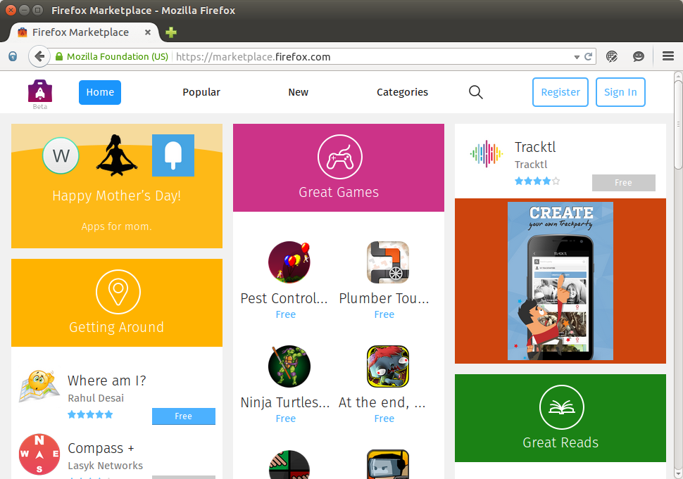
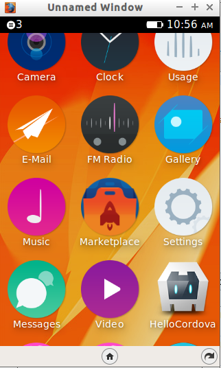
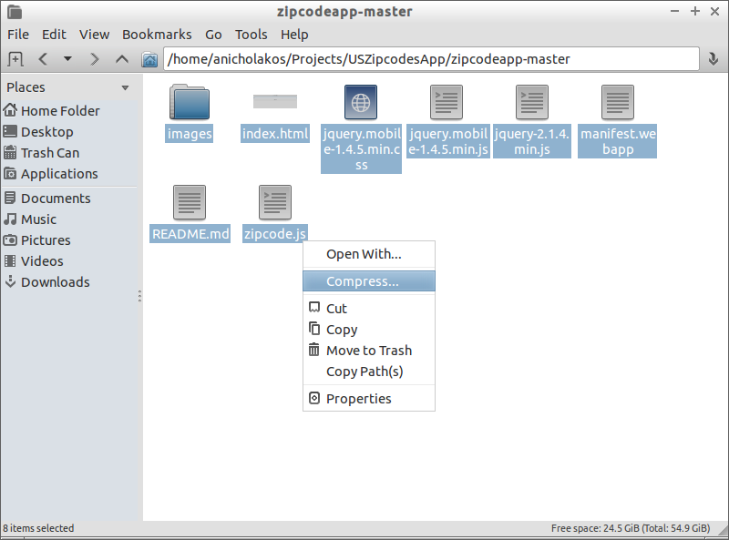
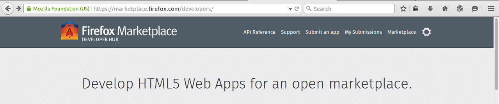
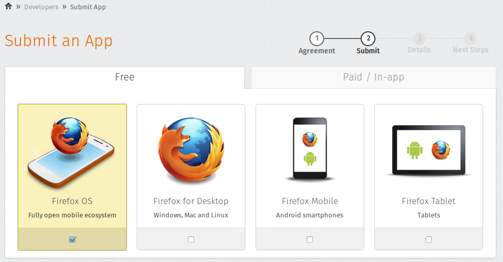
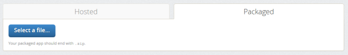
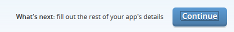

4. Submitting your Application to the Marketplace
Welcome to Episode 4 of the Firefox OS App Development Tutorial. This episode
will take you through the steps for submitting your Firefox OS App to the
Firefox Marketplace.
4.1. Prerequisites
- You have setup your machine with the Firefox OS Simulator. If not you can
check out Overview and Development Setup, which takes you through the entire setup.
- You have installed the zipcodeapp that we covered in Hello World.
This tutorial uses that as an example, but if you have any other application
installed in the Firefox WebIDE, then you should be able to follow along.
4.2. What we shall cover in this Episode
- What is the Firefox Marketplace?
- Things you need to do before you consider submitting to the Marketplace.
- Additional files/materials you need before submission.
- Detailed steps to submitting the application and correcting errors along the
way.
4.3. Firefox Marketplace Overview
Smartphones are what they are today because of the applications that are
available on them. Each of the smartphone operating systems has a Marketplace where developers (individuals or organizations) can publish their applications, free or paid, for download by users.
The Firefox Marketplace is a similar ecosystem for the Firefox Family of
Applications. The Applications are not just restricted to Firefox OS Mobile
Applications but they also cater for Firefox Browser Add-ons, Firefox for
Android Apps, etc. The submission process is unified but we shall focus here on
submitting the application for availability on Firefox OS Device.
Few things to note in brief about the Firefox OS Marketplace so that you can
compare it against other similar offerings like Apple iTunes, Google Play, etc.
- Signing up for the Marketplace is free. There is no yearly cost (like Apple
iTunes) or one-time registration cost (Google Play).
- You can sell both free and paid applications. Selling paid applications
would mean that you complete some additional paperwork.
- There is an application approval phase that is similar to what you see in
iTunes. Once your application is accepted after submission, it will be
put in a “Pending Review” status and members from the Marketplace Review team
will go through your application to certify that it is not doing anything it
is not supposed to do :-) Once reviewed, it is available immediately or later
on, if you decide otherwise.
- You can provide filters to your application that will ensure that the
application is available for installation only on devices having features
that you have asked for them to have, such as some Device APIs.
- The Firefox Marketplace App is available both as a
website and also an application on the
device. This is similar to other Smartphone OS.
The Firefox Marketplace (https://marketplace.firefox.com) as seen in your
desktop browser shown below:

The Firefox Marketplace App in your device is shown below:

You can use the OS Simulator itself to launch the Firefox Marketplace App and install some applications if you want to.
4.4. Steps Before You Publish to the Marketplace
Before you considering publishing to the Firefox Marketplace, do the following:
- Sign up for a Firefox Marketplace account. Visit https://marketplace.firefox.com/ and sign up.
- Test your application thoroughly. You cannot expect the Firefox Review team
to go through each and every bit of your functionality. They may, but their
main task is to do functionality testing and in the highly competitive mobile
application ecosystem, users typically give you only one chance to get it
right. So, make sure that the first impression is the best impression and
test, test, test, and then do some more tests.
Now that you have signed up and think your application is ready for the world, we still have some stuff to get in place.
4.5. Some Homework to do Before Submitting the Application
Here are the next things to take care of:
- Review your manifest.webapp file in detail. Pay special importantance to name
and description fields. The Firefox Marketplace will read the name and
description only from the Manifest file. And nothing is more important that
choosing a good name for your Firefox OS Application and describing it in
simple terms. Spend some time on this since a lot of users will search for
Applications based on some keywords that come to their mind.
- You will need to decide which category your application will fall under. As
we shall see a little later, the marketplace presents several categories that
you can place your application under. Choose a category with care. Typically
it is the first filter that users use while searching for your app in the
marketplace.
- You need to get application icons and screenshots for your application in
place because they will be used for submission. At the minimum you will need
a 60×60 application icon. So far we had seen adding 16, 32, 48, etc icons to
the manifest.webapp file but the Firefox OS Marketplace looks for a 60×60
icon. So do that the icon to your application and update your manifest file
with it. For example, your manifest.webapp entry for icons should look
something like lines 6-9:
1
2
3
4
5
6
7
8
9
10
11
12
13
14
15
16
17
18
19
20
21 | {
"version":"1.0",
"name": "Zipcodes",
"description": "This app gives you information on zipcodes of the US!",
"launch_path": "/index.html",
"icons": {
"128": "/images/zipcode_128.png",
"512": "/images/zipcode_512.png"
},
"developer": {
"name": "Romin Irani",
"url": "http://www.rominirani.com"
},
"default_locale": "en",
"type": "privileged",
"permissions": {
"systemXHR": {
"description": "Required to make Ajax Calls over the Network"
}
}
}
|
4.6. Submitting to Firefox Marketplace
We shall now start looking into the submission process for the Firefox Marketplace. Do keep in mind that I will take the Zipcodes app that we developed in Episode 2.
- Since we are delivering a packaged application to the Firefox Marketplace, we
need to compress all the files that comprise the application into a single
ZIP file. That is required by the Marketplace. So the first step is to take
all the files and compress them. A sample screenshot is shown below. It shows
the entire Zipcodes App directory and I am simply zipping up the entire set
of files to a ZIP file. Use any ZIP utility of your choice.


This will bring up the list of apps that you have (It will be an empty list if you have not submitted any apps until now). Click on the “Submit a New App” link show in the image above.
This will bring up a submission page where you will now need to provide various little pieces of information, some of which you would have ideally already prepared.
- We need to select the Firefox OS App as shown below. I had mentioned that the
Firefox Marketplace is a unified marketplace for applications in the Firefox
ecosystem (add-ons, Firefox for Android, Firefox OS apps), so you need to
tell what kind of app you are submitting. Hence, in our case, it is the
Firefox OS. Go ahead and select that.

- Below that you will find two tabs. One for “Hosted” and the other for “Packaged”. Since we are submitting a packaged app, select that tab. You should see something like the screen below:

- Click on Select a file button and this will bring up a File Dialog. Go ahead and select the ZIP file that you generated earlier.
- The file will get uploaded and you should see a progress bar that indicates that it is getting uploaded.
- Finally when it is all uploaded, the Marketplace will start validating your
ZIP file i.e. checking the manifest, any code violations, icons, etc.
- If there is a problem with the ZIP file contents, then a validation error will be shown.
- If the ZIP file validation is successful, you will get a positive validation message.
- Then click on the Continue button as shown below to proceed with filling out
the rest of the information for your application.

- Notice in the next screen that the description is completed for you from the manifest.webapp file.
- Select a Category for your application; I selected “Reference”. You
need to also provide a Privacy Policy text. There are enough resources
available on the net should you need to frame it more carefully than I have
done. You can optionally also provide a Homepage URL and/or Support Website URL.
You need to give your email address. The App does not need any Flash, hence
selected “No” over there.
- The next piece of information is important. You need to provide 1 or more
screenshots of your application. They should be at least 320px by 480px as
specified. I suggest that you put in atleast 2-3 important screenshots for
your application. Users do look at the screenshots in the Marketplace and it
could influence them significantly to download your application. Adding a
video is optional but highly recommended. Pictures speak louder than words
:-)
- Finally, click on “Continue”. This will indicate that the app has been
submitted and is now due for review.
- Now all you need to do is wait for 2-3 days to hear back from the team if
your application was reviewed and is available in the Marketplace. At any
point in time, you can login to your marketplace account, go to Settings and
then My Submissions. You should see the list of your applications. A sample
screenshot is shown below for the Zipcodes App and you will notice that it
shows that it is under review. The nice thing is that it tells you the
current queue status and expected time to complete the review.
With this, we come to the of this episode. Hope you have enjoyed it.
4.7. Next Steps
I suggest that you first think about a useful mobile app and begin your work towards writing a Firefox OS App. Once you are ready, submit it to the Firefox Marketplace. You might find the screens and information required for submission change a bit from time to time but the basic steps should remain the step. Also this is a great time to get in early in the game while the Marketplace is still in a nascent phase, so grab the opportunity. The Web is waiting…
4.8. Coming up Next
The next few episodes will begin diving into Device APIs. We will start off with the GPS and see how we can use HTML5 Location APIs to retrieve the position of the device and do some interesting things with it. Stay tuned…
{kind=link}
{kind=link}
{kind=link}
{kind=link}
{kind=link}
{kind=link}
{kind=link}